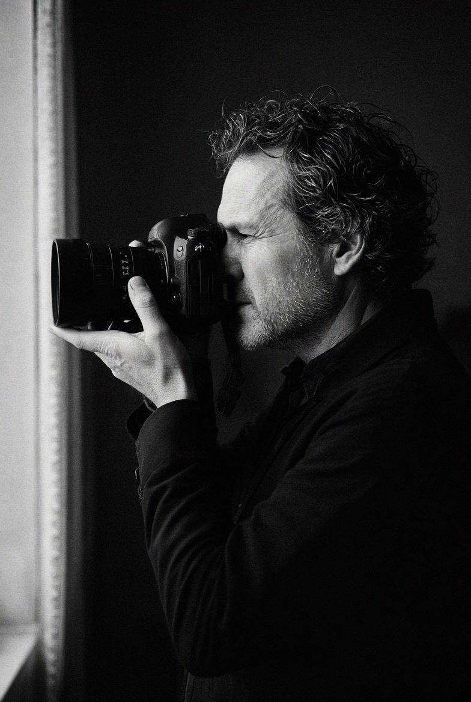
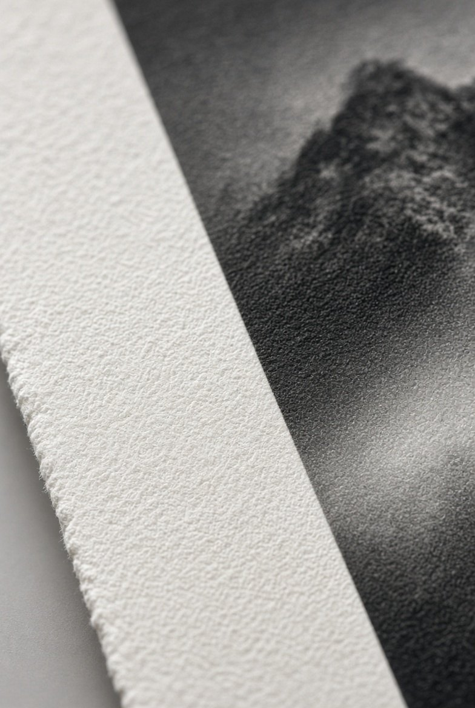
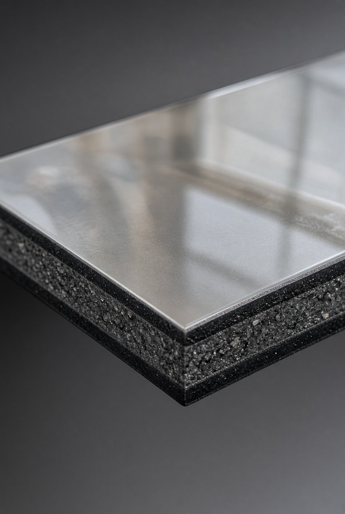
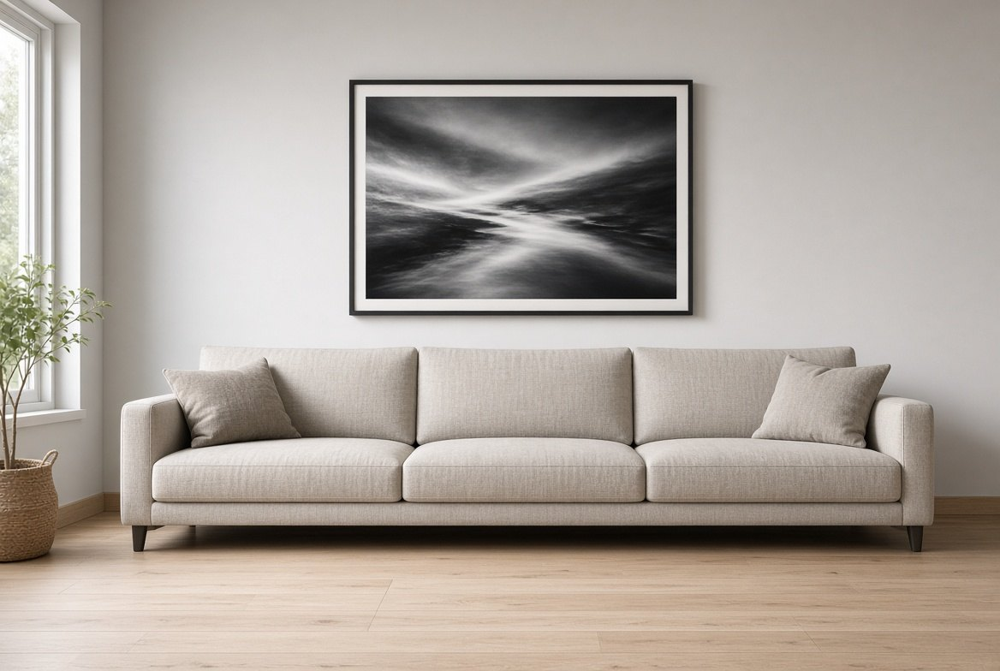
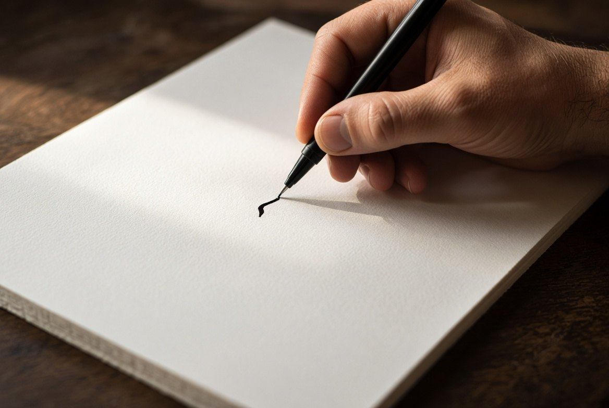
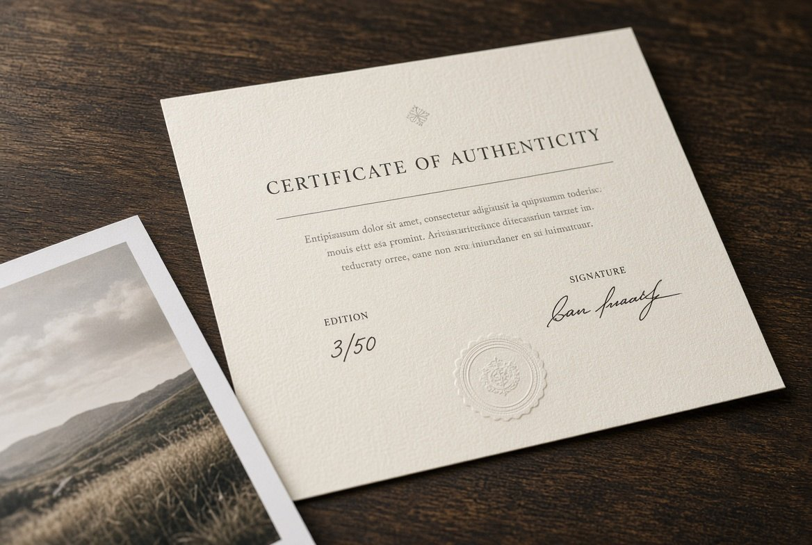

Le photographe,
le tirage, l'édition.

Joël Gourlain, Le Havre.
Photographe basé au Havre, en Normandie. Reportages, concerts, événements, art de rue et voyages : des photographies prises sur le vif, jamais mises en scène, éditées ensuite en tirages d'art limités, signés et numérotés, disponibles ici exclusivement.
Des Nuits Suspendues du Havre aux rues de New York, des plages de Martinique aux escaliers des Cyclades, chaque image garde la lumière du moment où elle a été prise.
- Le HavreVille Perret, port et concertsLe bassin du Commerce la nuit, Les Nuits Suspendues, le Tetris
- New YorkSkyline, street art et yellow cabsBrooklyn, Mulberry Street, Manhattan à l'heure bleue
- CaraïbesMartiniqueAnse Mabouya, le Diamant, le jardin de Balata
- CycladesSantorinOïa, Firostefani
- Depuis 2014Perspective PhotoGalerie en ligne, éditions limitées à trente exemplaires
Papier Fine Art, ou aluminium.
Deux rendus très différents pour la même photographie. Le comparateur est sur chaque fiche d'œuvre.

Fine Art Hahnemühle
Papier coton 308 g, mat, texture légère. Le rendu des galeries et des musées : profond, doux, sans reflet.
- Encres pigmentaires, plus de 100 ans de tenue
- Marge blanche pour la signature et le numéro
- À encadrer, sous verre ou sans
- Livré en tube rigide

Aluminium Dibond
La photographie contrecollée sur une plaque d'aluminium composite de 3 mm. Contemporain, net, prêt à accrocher.
- Couleurs plus contrastées, légère brillance
- Système d'accroche invisible au dos
- Sans cadre, sans verre, sans reflet gênant
- Livré en caisse rigide
Trente, et pas un de plus.
Chaque photographie existe en trente exemplaires, tous formats et supports confondus. Quand le trentième est vendu, l'édition est close. Le numéro est inscrit au dos, avec la signature et le certificat.

L'œuvre, le format, le support. Vous la voyez sur votre mur avant de décider.
À la commande, par un laboratoire Fine Art, sous contrôle du photographe.

Au dos, à la main, avec le certificat d'authenticité de l'exemplaire.

Sous dix jours ouvrés, emballage renforcé, livraison offerte en France et en Europe.
Ce qu'on nous demande.
Le tirage est-il vraiment unique ?
Trente exemplaires existent par photographie, tous formats et supports confondus, chacun signé et numéroté. Aucun tirage supplémentaire n'est réalisé une fois l'édition close.
Quel délai de livraison ?
Le tirage est réalisé à la commande. Comptez dix jours ouvrés entre la commande et la livraison, en France et en Europe. La livraison est offerte.
Faut-il encadrer le papier Fine Art ?
Oui, pour le protéger : sous verre, ou en caisse américaine. La marge blanche est prévue pour cela. L'aluminium Dibond, lui, s'accroche directement, sans cadre ni verre.
Puis-je retourner un tirage ?
Un tirage est réalisé à la commande et numéroté à votre nom ; il n'est pas repris sauf défaut de fabrication ou dommage pendant le transport, auquel cas il est refait et réexpédié. Conditions à préciser dans la version finale.
Comment offrir une œuvre sans choisir à la place de quelqu'un ?
Avec la carte cadeau : un montant, un message, et la personne choisit l'œuvre, le format et le support. .